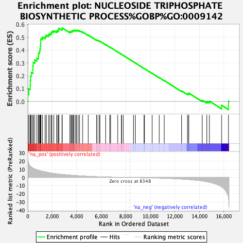
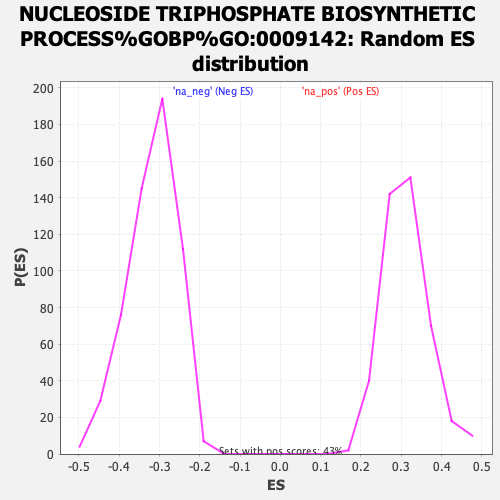

| Dataset | ranked_gene_list |
| Phenotype | NoPhenotypeAvailable |
| Upregulated in class | na_pos |
| GeneSet | NUCLEOSIDE TRIPHOSPHATE BIOSYNTHETIC PROCESS%GOBP%GO:0009142 |
| Enrichment Score (ES) | 0.57362413 |
| Normalized Enrichment Score (NES) | 1.8445688 |
| Nominal p-value | 0.0 |
| FDR q-value | 0.07884434 |
| FWER p-Value | 0.638 |

| SYMBOL | RANK IN GENE LIST | RANK METRIC SCORE | RUNNING ES | CORE ENRICHMENT | |
|---|---|---|---|---|---|
| 1 | ATP5F1D | 14 | 23.040 | 0.0581 | Yes |
| 2 | NDUFS8 | 85 | 17.372 | 0.0983 | Yes |
| 3 | MT-ND4 | 201 | 14.208 | 0.1277 | Yes |
| 4 | MT-ND2 | 207 | 14.084 | 0.1635 | Yes |
| 5 | IMPDH1 | 238 | 13.630 | 0.1965 | Yes |
| 6 | MT-ND1 | 288 | 13.009 | 0.2268 | Yes |
| 7 | ATP5MC2 | 418 | 11.592 | 0.2486 | Yes |
| 8 | UCK1 | 421 | 11.583 | 0.2782 | Yes |
| 9 | ATP5ME | 449 | 11.365 | 0.3056 | Yes |
| 10 | NME3 | 576 | 10.505 | 0.3248 | Yes |
| 11 | NDUFB10 | 748 | 9.481 | 0.3386 | Yes |
| 12 | NDUFB11 | 877 | 8.828 | 0.3534 | Yes |
| 13 | NDUFV1 | 885 | 8.761 | 0.3754 | Yes |
| 14 | NDUFA3 | 955 | 8.510 | 0.3930 | Yes |
| 15 | MT-ATP6 | 1010 | 8.282 | 0.4109 | Yes |
| 16 | NDUFS2 | 1024 | 8.242 | 0.4312 | Yes |
| 17 | MT-ND3 | 1056 | 8.092 | 0.4500 | Yes |
| 18 | NDUFB1 | 1063 | 8.069 | 0.4703 | Yes |
| 19 | NDUFS3 | 1070 | 8.025 | 0.4905 | Yes |
| 20 | IMPDH2 | 1198 | 7.569 | 0.5021 | Yes |
| 21 | NDUFA5 | 1418 | 6.923 | 0.5065 | Yes |
| 22 | ATP5MC1 | 1514 | 6.597 | 0.5175 | Yes |
| 23 | NDUFS7 | 1699 | 6.040 | 0.5217 | Yes |
| 24 | TGFB1 | 1809 | 5.752 | 0.5298 | Yes |
| 25 | VPS9D1 | 1929 | 5.478 | 0.5365 | Yes |
| 26 | NDUFS6 | 1977 | 5.371 | 0.5474 | Yes |
| 27 | NDUFAB1 | 2128 | 4.993 | 0.5510 | Yes |
| 28 | NDUFA1 | 2356 | 4.532 | 0.5487 | Yes |
| 29 | NDUFA10 | 2454 | 4.380 | 0.5540 | Yes |
| 30 | NDUFA2 | 2529 | 4.246 | 0.5604 | Yes |
| 31 | ATP5MJ | 2534 | 4.243 | 0.5710 | Yes |
| 32 | NDUFS5 | 2797 | 3.781 | 0.5646 | Yes |
| 33 | ATP5F1B | 2809 | 3.769 | 0.5736 | Yes |
| 34 | NDUFB3 | 3433 | 2.939 | 0.5430 | No |
| 35 | ATP5F1E | 3519 | 2.837 | 0.5451 | No |
| 36 | ATP5MK | 3591 | 2.747 | 0.5478 | No |
| 37 | NDUFB7 | 3652 | 2.664 | 0.5509 | No |
| 38 | ATP5PF | 3730 | 2.579 | 0.5528 | No |
| 39 | NDUFA6 | 3776 | 2.529 | 0.5565 | No |
| 40 | NUDT2 | 3911 | 2.400 | 0.5545 | No |
| 41 | NDUFC1 | 3986 | 2.318 | 0.5559 | No |
| 42 | COX11 | 4111 | 2.197 | 0.5539 | No |
| 43 | NDUFB2 | 4226 | 2.078 | 0.5523 | No |
| 44 | DTYMK | 4477 | 1.868 | 0.5418 | No |
| 45 | SDHC | 4932 | 1.506 | 0.5178 | No |
| 46 | NDUFA8 | 5626 | 1.039 | 0.4781 | No |
| 47 | ATP5MC3 | 5646 | 1.029 | 0.4796 | No |
| 48 | MT-ND4L | 5819 | 0.936 | 0.4714 | No |
| 49 | ATP5F1A | 5891 | 0.900 | 0.4694 | No |
| 50 | NDUFB9 | 6351 | 0.671 | 0.4430 | No |
| 51 | CMPK2 | 6688 | 0.512 | 0.4238 | No |
| 52 | CTPS2 | 6762 | 0.471 | 0.4205 | No |
| 53 | SDHB | 7336 | 0.258 | 0.3861 | No |
| 54 | NDUFB6 | 7643 | 0.164 | 0.3678 | No |
| 55 | NDUFB4 | 7655 | 0.162 | 0.3675 | No |
| 56 | MT-ND5 | 7791 | 0.124 | 0.3596 | No |
| 57 | ATP5PB | 8620 | -0.061 | 0.3091 | No |
| 58 | ATP5F1EP2 | 8772 | -0.097 | 0.3001 | No |
| 59 | AK4 | 9480 | -0.296 | 0.2576 | No |
| 60 | AK3 | 9515 | -0.307 | 0.2563 | No |
| 61 | NDUFV3 | 10143 | -0.526 | 0.2193 | No |
| 62 | PRKAG2 | 10723 | -0.788 | 0.1859 | No |
| 63 | CTPS1 | 11129 | -0.978 | 0.1636 | No |
| 64 | ATP5PD | 12545 | -1.998 | 0.0821 | No |
| 65 | NDUFS4 | 13020 | -2.442 | 0.0593 | No |
| 66 | UCK2 | 13121 | -2.580 | 0.0598 | No |
| 67 | ATP5F1C | 13132 | -2.586 | 0.0658 | No |
| 68 | NDUFS1 | 14224 | -4.253 | 0.0100 | No |
| 69 | NDUFA12 | 14599 | -5.236 | 0.0005 | No |
| 70 | MT-ND6 | 14811 | -5.867 | 0.0026 | No |
| 71 | SLC25A13 | 15806 | -11.299 | -0.0293 | No |
| 72 | MT-ATP8 | 16366 | -25.895 | 0.0028 | No |
